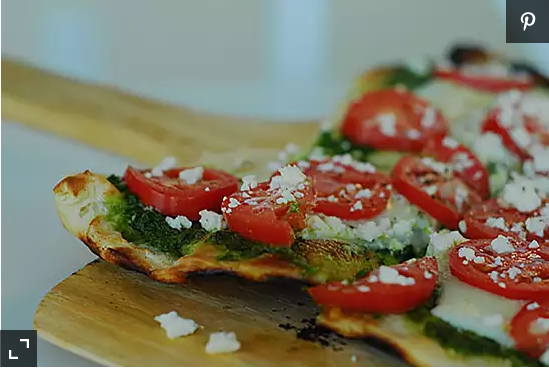

Pesto Pizza

Description
Loaded with vibrant pesto, fresh tomatoes and mozzarella, these pesto pizzas scream summer. The key is to spread a generous layer of pesto over the pizzas before baking, and then top them with more pesto when they come out of the oven.
Ingredients
- 1 (12 inch) pre-baked pizza crust
- ½ cup pesto
- 1 ripe tomato, chopped
- ½ cup green bell pepper, chopped
- 1 (2 ounce) can chopped black olives, drained
- ½ small red onion, chopped
- 1 (4 ounce) can artichoke hearts, drained and sliced
- 1 cup crumbled feta cheese
Steps to makes
- Preheat oven to 450 degrees F (230 degrees C).
- Spread pesto on pizza crust. Top with tomatoes, bell peppers, olives, red onions, artichoke hearts and feta cheese.
- Bake for 8 to 10 minutes, or until cheese is melted and browned.
Click to go to homepage